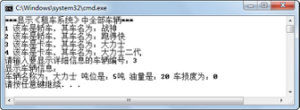

3.6 List接口
List接口是Collection接口的子接口，在实现了List接口的集合中，元素是有序的，而且可以重复。List接口和Set接口一样，可以容纳所有类型的对象。List集合中的数据元素都对应一个整数型的序号索引，记录其在集合中的位置，可以根据此序号存取元素。
JDK中实现了List接口的常用类有ArrayList和LinkedList。
3.6.1 List接口方法
List接口继承自Collection接口，除了拥有Collection接口所拥有的方法外，它还拥有下列方法：
- void add(int index,Object o)
在集合的指定位置插入指定的数据元素。
- Object get(int index)
返回集合中指定位置的数据元素。
- int indexOf(Object o)
返回此集合中第一次出现的指定数据元素的索引，如果此集合不包含该数据元素，则返回-1。
- int lastIndexOf(Object o)
返回此集合中最后出现的指定数据元素的索引，如果此集合不包含该数据元素，则返回-1。
- Object remove(int index)
移除集合中指定位置的数据元素。
- Object set(int index,Object o)
用指定数据元素替换集合中指定位置的数据元素。
3.6.2 ArrayList使用
ArrayList实现了List接口，在存储方式上ArrayList采用数组进行顺序存储。ArrayList对数组进行了封装，实现了可变长度的数组。与ArrayList不同的是LinkedList，它在存储方式上采用链表进行链式存储。
通过数据结构的学习，可得出这样的结论，因为ArrayList是用数组实现的，在插入或删除数据元素时，需要批量移动数据元素，故性能较差；但在查询数据元素时，因为数组是连续存储的，且可以通过下标进行访问，所以在遍历元素或随机访问元素时效率高。LinkedList正好与之相反，这一点在企业面试时经常被问到，需要大家深刻领会。
继续修改“租车系统”的代码，学习ArrayList集合的使用。假设“租车系统”有如下需求调整。
（1）用户可以遍历这个系统里所有的车辆，但只能看到车型和车名。
（2）当用户选中某辆车时，需要完整显示车辆信息。
根据需求编写如下代码：
import java.util.*;
import com.bd.zuche.*;
class TestZuChe2
{
public static void main(String[] args)
{
int index = -1; //用于显示序号
Scanner input = new Scanner(System.in);
//创建ArrayList集合，用于存放车辆
List vehAL = new ArrayList();
Vehicle c1 = new Car("战神","长城");
Vehicle c2 = new Car("跑得快","红旗");
Vehicle t1 = new Truck("大力士","5吨");
Vehicle t2 = new Truck("大力士二代","10吨");
vehAL.add(c1); //将c1添加vehAL集合的末尾
vehAL.add(c2);
vehAL.add(t1);
vehAL.add(t2);
System.out.println("***显示“租车系统”中全部车辆***");
index = 1;
//增强for循环遍历
for(Object obj:vehAL){
if(obj instanceof Car)
{
Car car = (Car)obj;
System.out.println(index + " 该车是轿车，其车名为：" + car.getName());
}else{
Truck truck = (Truck)obj;
System.out.println(index + " 该车是卡车，其车名为：" + truck.getName());
}
index++;
}
System.out.print("请输入要显示详细信息的车辆编号：");
//根据索引获取vehAL集合中元素，类型转换后调用show()方法输出
((Vehicle)vehAL.get(input.nextInt()-1)).show();
}
}
编译、运行程序，运行结果如图3.7所示。通过代码和运行结果可以看出，此例中采用了增强for循环的方式遍历了ArrayList集合中的所有元素，集合中元素的顺序是按照add()方法调用的顺序依次存储的，再通过调用ArrayList接口的get(int index)方法获取指定位置的元素，并输出该对象的信息。

图3.7 ArrayList使用
3.6.3 LinkedList使用
LinkedList和ArrayList在逻辑结构上没有本质区别，只是存储结构上的差异导致程序员在决定使用哪个List实现类时需要做出选择。LinkedList接口除了拥有ArrayList接口提供的方法外，还增加了如下一些方法。
- void addFirst(Object o)
将指定数据元素插入此集合的开头。
-l void addLast(Object o)
将指定数据元素插入此集合的结尾。
- Object getFirst()
返回此集合的第一个数据元素。
- Object getLast()
返回此集合的最后一个数据元素。
- Object removeFirst()
移除并返回此集合的第一个数据元素。
- Object removeLast()
移除并返回此集合的最后一个数据元素。